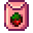

Изготовление предметов
- О приготовлении пищи смотрите статью Готовка.
В меню изготовления предметов можно попасть, поставив игру на паузу (по кнопкам ESC или E на ПК,  на Switch,
на Switch,  на Xbox,
на Xbox,  на PlayStation) и открыв вкладку с изображением молотка. Доступные игроку рецепты подсвечены; предметы, для изготовления которых не хватает материалов, закрашены серым.
на PlayStation) и открыв вкладку с изображением молотка. Доступные игроку рецепты подсвечены; предметы, для изготовления которых не хватает материалов, закрашены серым.
Если навести курсор мыши на предмет, во всплывающем окне можно увидеть, какие материалы нужны для его изготовления. Красным подсвечиваются материалы, которых не хватает в инвентаре игрока.
Чтобы изготовить предмет, соберите все необходимые материалы и нажмите на его изображение. Созданный предмет появляется под курсором, и его можно положить в инвентарь. Со временем список предметов для изготовления увеличивается и растягивается на несколько страниц.
Чтобы увидеть количество сделанных предметов, перейдите в настройки и поставьте галочку на пункте "Показать дополнительную информацию по изготовлению".
Новые рецепты и схемы можно выучить, улучшив навыки, купив в магазинах или у торговцев или получив в подарок от жителей, с которыми игрок подружился.
Бомбы
Бомбы можно использовать только один раз. Они взрываются и повреждают некоторые объекты в радиусе поражения. Бомбы бывают трех видов.
| Вид | Название | Описание | Состав | Радиус | Источник рецепта | Цена продажи |
|---|---|---|---|---|---|---|
| Бомбочка | Взрывается в малом радиусе. Разойдись! | 3 | ||||
| Бомба | Взрывается в среднем радиусе. Будьте осторожны! | 5 | ||||
| Мегабомба | Взрывается в огромном радиусе. Разбегайтесь! | 6-8 |
Заборы
Заборы ограничивают передвижение игрока, монстров, и животных, а также рост травы.
Свойства всех заборов одинаковы, они отличаются только прочностью и долговечностью в зависимости от материала.
Установленный на ферме забор существует в одном из трёх состояний: недавно установленный (если сломать его при помощи инструментов, он выпадает как предмет и его можно взять обратно в инвентарь), обычный (просто исчезает, если его сломать) и поврежденный (выглядит поврежденным и исчезает, если его сломать). В отличие от заборов, ворота всегда выпадают как предмет при ударе инструментом, так что их всегда можно переставить в другое место.
Если надолго оставить забор в поврежденном состоянии, он исчезнет совсем. Можно заменить поврежденный забор на новый, не используя инструменты: просто выбрать в инвентаре новый забор и «использовать» его на старом.
Муж или жена игрока иногда чинят поврежденный забор по утрам.
Пройти через забор невозможно, необходима калитка. Её можно открывать и закрывать, чтобы не давать животным выйти.
| Вид | Название | Описание | Срок службы | Состав | Источник рецепта | |
|---|---|---|---|---|---|---|
| Дней | Сезонов | |||||
| Калитка | Позволяет пройти через забор. | 360 | 12.9 | Доступен по умолчанию | ||
| Деревянный забор | Не дает траве разрастись, а животным — сбежать. | 48-52 | 1.7-1.9 | Доступен по умолчанию | ||
| Каменный забор | Прочнее, чем деревянный забор. | 106-109 | 3.8-3.9 | |||
| Железный забор | Прочнее, чем каменный забор. | 223-226 | 8.0-8.1 | |||
| Забор из твердой древесины | Самый прочный забор. | 502-505 | 17.9-18.0 | |||
Спринклеры
Спринклеры просто необходимы для автоматизации на ферме. Спринклеры автоматически поливают растения в 6 часов утра ежедневно. Спринклеры можно использовать для автоматического заполнения поилок в вольере для слаймов; не могут заполнять миску для домашних животных. Спринклеры также не будут поливать растения в садовых горшках. Нельзя размещать на песке.
| Вид | Название | Описание | Состав | Источник рецепта |
|---|---|---|---|---|
| Спринклер | Поливает 4 смежные клетки земли каждое утро. |
|
||
| Высококачественный спринклер | Поливает 8 смежных клеток земли каждое утро. |
|
||
| Иридиевый спринклер | Поливает 24 смежные клетки земли каждое утро. |
|
На картинке показана область, которую может поливать каждый из спринклеров:

Спринклер и высококачественный спринклер появляются в случайном ассортименте у странствующей торговки. Иридиевый спринклер можно приобрести у Кробуса за  10 000 з. по пятницам.
10 000 з. по пятницам.
Автоматы для производства
Автоматы для производства используются для изготовления товаров собственного производства. Каждый из этих автоматов производит только определенные продукты и только по одному продукту за раз. Чтобы увеличить объемы производства, потребуется больше автоматов.
Прежде чем загружать автомат снова или продолжать производство, произведенный товар нужно забрать.
| Вид | Название | Описание | Состав | Источник рецепта |
|---|---|---|---|---|
| Майонезный автомат | Превращает яйца в майонез. |
|
||
| Улей | Поставьте его под открытым небом, и скоро у вас будет вкусный мед! (Зимой не работает) | |||
| Кадка | Используется для маринования овощей и изготовления джема из фруктов. | |||
| Пресс для сыра | Превращает молоко в сыр. | |||
| Прялка | Превращает шерсть в ткань. | |||
| Бочонок | Положите в него фрукты или овощи. В конечном итоге из них получится напиток. | |||
| Пресс для масла | Используется для изготовления трюфельного масла. | |||
| Бочка | Используется в подвале для выдержки таких продуктов, как сыр и вино. | Последнее улучшение дома, добавляющее подвал | ||
| Коптильня для рыбы | Положите внутрь рыбу и кусок угля, чтобы закоптить рыбу. Копченая рыба стоит в два раза дороже. | В рыбацком магазине за | ||
| Сушилка | Положите внутрь 5 фруктов или съедобных грибов, чтобы их засушить. | Магазин Пьера за |
Удобрения
- Основная статья: Удобрения
Удобрения используются для улучшения работы фермы. Они нужны, чтобы задерживать воду в почве, улучшать качество урожая или ускорять рост растений. Обычное и высококачественное удобрения, которые улучшают качество урожая, нужно использовать на возделанной почве прежде чем сажать семена. Остальные удобрения можно использовать как на возделанной почве, так и после того, как семена посажены. На одной «клетке» можно использовать только одно удобрение.
| Вид | Название | Описание | Состав | Источник рецепта |
|---|---|---|---|---|
| Обычное удобрение | Немного улучшает качество почвы, увеличивая шансы вырастить урожай высокого качества. Смешать с возделанной почвой. | |||
| Высококачественное удобрение | Улучшает качество почвы, увеличивая шанс вырастить урожай высокого качества. Смешать с возделанной почвой. | |||
| Удобрение Делюкс (5) | Разительно улучшает качество почвы, увеличивая шанс вырастить урожай высокого качества. Смешать с возделанной почвой. | Покупается в Ореховой комнате Мистера Ки за | ||
| СкороРост (5) | Ускоряет рост листьев. Гарантирует увеличение скорости роста растений как минимум на 10%. Смешать с возделанной почвой. | |||
| СкороРост Делюкс (5) | Ускоряет рост листьев. Гарантирует увеличение скорости роста растений как минимум на 25%. Смешать с возделанной почвой. | |||
| Гипер СкороРост | Разительно ускоряет рост листьев. Гарантирует увеличение скорости роста растений как минимум на 33%. Смешать с возделанной почвой. | Покупается в Ореховой комнате Мистера Ки за | ||
| Обычная влагосохраняющая почва | Эта почва может сохранить воду с предыдущего полива на следующий день. Смешать с возделанной почвой. | |||
| Высококач. влагосохраняющая почва | Эта почва с наибольшей вероятностью сохранит воду с предыдущего полива на следующий день. Смешать с возделанной почвой. | |||
| Влагосохраняющая почва Делюкс (2) | У этой почвы есть 100%-й шанс оставаться увлажненной наутро. Смешать с возделанной почвой. | Покупается у Островного торговца за | ||
| Древесное удобрение | Посыпьте им обычное деверо, и оно будет активно расти даже зимой. Не работает с плодовыми деревьями. |
Семена
Из этих сезонных семян вырастают фрукты, овощи или цветы, которые обычно можно найти в дикой природе. Из древних семян вырастает древний плод. Созданная рассада травы действует так же, как и после покупки в Магазине Пьера — после посадки продолжает распространять траву по ферме.
Обратите внимание: на Имбирном острове иногда после созревания сезонных растений возделанная почва под ними разрушается (вместе с удобрениями, если они использовались).
| Вид | Название | Описание | Состав | Источник рецепта |
|---|---|---|---|---|
| Дикие семена (Весна) (Весенние семена) |
Разнообразные семена диких весенних растений. (Примечание: в результате получается предмет под названием «Весенние семена». Из одного рецепта получается 10 пакетиков семян.) |
|
||
 |
Дикие семена (Лето) (Летние семена) |
Разнообразные семена диких летних растений. (Примечание: в результате получается предмет под названием «Летние семена». Из одного рецепта получается 10 пакетиков семян.) |
|
|
| Дикие семена (Осень) (Осенние семена) |
Разнообразные семена диких осенних растений. (Примечание: в результате получается предмет под названием «Осенние семена». Из одного рецепта получается 10 пакетиков семян.) |
|||
| Дикие семена (Зима) (Зимние семена) |
Разнообразные семена диких зимних растений. (Примечание: в результате получается предмет под названием «Зимние семена». Из одного рецепта получается 10 пакетиков семян.) |
|||
| Древние семена | Могут ли они еще прорасти? | Пожертвовать древнее семя в музей | ||
| Рассада травы | Посадите на ферме, если вам нужна трава. | Магазин Пьера за | ||
| Рассада голубой травы | Посадите на вашей ферме, чтобы вырастить кустик голубой травы. | Ореховая комната Мистера Ки за | ||
| Саженец чая | Вырастает за 20 дней. Производит чайные листья каждый день в течение последней недели каждого времени года. Можно не поливать! | Дикие семена (любые) (2) |
Письмо от | |
| Семена волокон (4) | Сажайте их в любое время года. Не требуют полива. Собираются косой. Вырастают за 7 дней. | |||
| Семя таинственного дерева | Его можно посадить и вырастить особое дерево. |
Декор
| Вид | Название | Описание | Состав | Источник рецепта |
|---|---|---|---|---|
| Деревянное покрытие | Создавайте дорожки на улице или застелите полы в доме. | Столярная мастерская за | ||
| Грубоватое дощатое покрытие | Замостите им тропинки на ферме или застелите пол в доме. | Столярная мастерская за | ||
| Соломенное покрытие | Создавайте дорожки на улице или застелите полы в доме. | Столярная мастерская за | ||
| Потертое покрытие | Создавайте дорожки на улице или застелите полы в доме. |
| ||
| Кристальное покрытие | Создавайте дорожки на улице или застелите полы в доме. |
| ||
| Каменное покрытие | Создавайте дорожки на улице или застелите полы в доме. | Столярная мастерская за | ||
| Каменное тротуарное покрытие | Замостите им тропинки на ферме или застелите пол в доме. | Столярная мастерская за | ||
| Кирпичный покрытие | Создавайте дорожки на улице или застелите полы в доме. | Столярная мастерская за | ||
| Деревянная дорожка | Создавайте дорожки на улице или застелите полы в доме. | Доступен по умолчанию | ||
| Дорожка из гравия | Создавайте дорожки на улице или застелите полы в доме. | Доступен по умолчанию | ||
| Каменная дорожка | Создавайте дорожки на улице или застелите полы в доме. | Доступен по умолчанию | ||
| Дорожка из крупных камней | Создавайте дорожки на улице или застелите полы в доме. | Столярная мастерская за | ||
| Дорожка из кристаллов | Создавайте дорожки на улице или застелите полы в доме. | Столярная мастерская за |
Рыбная ловля
| Вид | Название | Описание | Состав | Источник рецепта |
|---|---|---|---|---|
| Спиннер | Он вращается на воде благодаря своей форме. Немного увеличивает частоту клева. | |||
| Мини-ловушка | Рыба ускользает медленнее. | |||
| Сонарный поплавок | Показывает, какая рыба попалась на крючок, пока она еще в воде. | |||
| Пробковый поплавок | Немного увеличивает размер вашей «полоски». | |||
| Высококачественный поплавок | Разительно увеличивает качество вылавливаемой рыбы. | |||
| «Искатель сокровищ» | Рыба не ускользает во время ловли сокровищ. Также слегка увеличивает шанс найти сокровища. | |||
| Украшенный спиннер | Металлическая полоска и цветные ленточки завораживают рыбу. Увеличивает частоту клева. | |||
| Крючок с бородкой | Увеличивает вероятность поймать рыбу, «полоска» при рыбалке «липнет» к рыбе. Лучше всего работает на слабой, медлительной рыбе. | |||
| Магнит | Увеличивает шанс найти сокровища на рыбалке. Правда, вкус этой приманки рыбам не очень-то нравится. | |||
| Наживка (5) | С ней рыба клюет быстрее. Используется с подходящей удочкой. | |||
| Элитная наживка (5) | Заставляет рыбу клевать быстрее и увеличивает размер «рыболовной шкалы». | |||
| Дикая наживка (5) | Уникальный рецепт Линуса, позволяющий поймать сразу две рыбы. |
| ||
| Волшебная приманка (5) | Позволяет ловить рыбу любого времени года, времени суток, погоды в любой воде, куда бы вы ее ни забросили. |
| ||
| Сложная наживка (5) | При «совершенной» ловле вы получаете в три раза больше рыбы. Однако если рыба сбегает с «рыболовной шкалы», улов уменьшается. | |||
| Крабовая ловушка | Положите ее в воду и начините наживкой. Приходите за уловом на следующий день. Работает в реках, озерах и в океане. | С профессией Краболов: |
Кольца
- Основная статья: Кольца
| Вид | Название | Описание | Состав | Источник рецепта |
|---|---|---|---|---|
| Кольцо стойкости | Наполовину снижает длительность негативных статусных эффектов. | |||
| Кольцо воина | Может временно наделить обладателя «энергией воина» после уничтожения чудовищ. |
|
||
| Кольцо Иобы | Может наделить обладателя временной неуязвимостью. |
|
||
| Кольцо Шипов | Враги будут получать урон, атакуя вас. | |||
| Светокаменное кольцо | Излучает постоянный свет, а также увеличивает радиус подбираемых вами предметов. | |||
| Иридиевый обод | Сияет, притягивает предметы и увеличивает силу вашей атаки на 10%. |
|
||
| Обручальное кольцо | Старая традиция города Зузу. Такое кольцо нужно, чтобы предложить руку и сердце соседу или соседке. Примечание. Только совместной игры. |
Странствующая торговка за |
Съедобные предметы
| Вид | Название | Описание | Состав | Энергия | Здоровье | Источник Рецепта |
|---|---|---|---|---|---|---|
| Полевая закуска | Закуска на скорую руку для голодного собирателя. | |||||
| Жучиный стейк | Последняя надежда голодного пещерного дайвера. | |||||
| Эликсир жизни | Полностью восстанавливает здоровье. | |||||
| Чесночное масло | Выпейте, и слабые монстры будут вас избегать. |
Расходуемые предметы
Данные предметы используются один раз, затем исчезают. Отсутствует диалог подтверждения для использования, оно произойдет сразу после нажатия.
| Вид | Название | Описание | Состав | Источник рецепта |
|---|---|---|---|---|
| Монстрячий мускус | Распылите его, чтобы выманить побольше монстров из укрытий. | |||
| Волшебный порошок | Посыпьте им бочонки, плавильные печи и прочее добывающее оборудование, чтобы незамедлительно получить их продукцию. | |||
| Тотем-телепорт: Пляж | Переносит вас прямиком на пляж. Одноразовый предмет. | |||
| Тотем-телепорт: Горы | Переносит вас прямиком к горам. Одноразовый предмет. | |||
| Тотем-телепорт: Ферма | Переносит вас прямо к вашему дому. Одноразовый предмет. | |||
| Тотем-телепорт: Пустыня | Переносит вас прямиком в пустыню Калико. Одноразовый предмет. | Меняла за | ||
| Тотем-телепорт: Остров | Переносит вас прямиком на Имбирный остров. Одноразовый предмет. | Вулканический магазин Дварфа за | ||
| Тотем дождя | При использовании значительно повышает вероятность дождя на следующий день. Одноразовый предмет. | |||
| Тотем сокровищ | Используйте на вскапываемой почве, чтобы создать круг из мест для поиска сокровищ. Одноразовый предмет. |
Освещение
| Вид | Название | Описание | Состав | Источник рецепта |
|---|---|---|---|---|
| Факел | Умеренно освещает все вокруг. | Доступен по умолчанию | ||
| Костер | Умеренно освещает все вокруг. | Доступен по умолчанию | ||
| Деревянный светильник | Умеренно освещает все вокруг. | Столярная мастерская за | ||
| Каменный светильник | Умеренно освещает все вокруг. | Столярная мастерская за | ||
| Золотой светильник | Умеренно освещает все вокруг. | Столярная мастерская за | ||
| Резной светильник | Умеренно освещает все вокруг. | Столярная мастерская за | ||
| Пень-светильник | Умеренно освещает все вокруг. | Столярная мастерская за | ||
| Бочка-светильник | Умеренно освещает все вокруг. | Столярная мастерская за | ||
| Светильник-череп | Умеренно освещает все вокруг. | Столярная мастерская за | ||
| Мраморный светильник | Умеренно освещает все вокруг. | Столярная мастерская за | ||
| Деревянный фонарь | Ярко освещает все вокруг. | Столярная мастерская за | ||
| Железный фонарь | Ярко освещает все вокруг. | Столярная мастерская за | ||
| Фонарь из тыквы | Чудное осеннее украшение. |
|
Оборудование для переработки
| Вид | Название | Описание | Состав | Источник рецепта | |
|---|---|---|---|---|---|
| Углевыжигательная печь | Превращает 10 единиц дерева в один кусочек угля. | ||||
| Кристалляриум | Вставьте в него камень, который хотите размножить. | ||||
| Плавильная печь | Выплавляет металлические слитки из руды. Требует угля. |
| |||
| Большая плавильная печь | Плавит 5 слитков за раз. Для использования нужно 25 руды и 3 угля. | ||||
| Громоотвод | Производит аккумуляторы, используя молнии для их зарядки. | ||||
| Солнечная панель | Медленно генерирует аккумуляторы, находясь на солнце. | ||||
| Утилизационная машина | Превращает выловленный мусор в полезные ресурсы. | ||||
| Экстрактор семян | Извлекает семена из собранного урожая. Не работает с плодами фруктовых деревьев. | ||||
| Инкубатор слаймов | Выращивает слаймов из яиц слаймов. Позволяет разводить собственных слаймов. | ||||
| Инкубатор страусов | Высиживает страусиные яйца. Ставится в Хлев. |
| |||
| Пресс для яиц слаймов | Сжимает 100 кусочков слизи в яйцо слайма. До чего техника дошла! | ||||
| Подсочник | Повесьте его на клен, дуб или сосну. Через некоторое время вы получите соответствующий продукт! | ||||
| Тяжелый подсочник | Повесьте его на клен, дуб или сосну. Через некоторое время вы получите соответствующий продукт! Работает в два раза быстрее обычного. | Купить у Мистера Ки за | |||
| Бак с червями | Постоянный источник наживки. Черви внутри не нуждаются в подкормке. | ||||
| Элитный бак с червями | Регулярно производит элитную наживку. Черви внутри не нуждаются в подкормке. | ||||
| Костедробилка | Перемалывает костяные предметы в удобрение. | ||||
| Разбиватель жеод | Автоматически разбивает жеоды. Работает на угле. | ||||
| Грибной пень | Время от времени зарастает грибами. Лучше зарастает при наличии рядом диких деревьев. | ||||
| Автонаживщик | Поместите в него рыбу, чтобы создать подходящую наживку. |
Мебель
| Вид | Название | Описание | Состав | Источник рецепта |
|---|---|---|---|---|
| Цветочный бочонок | Цветы, растущие в дубовой бочке. Цветут весной и летом. |
| ||
| Нечистая статуя | Почему-то от этой статуи становится не по себе. |
| ||
| Флейта-блок | Издает звук флейты, когда вы проходите мимо. |
| ||
| Барабан-блок | Издает звук барабана, когда вы проходите мимо. |
|
Сундуки
| Вид | Название | Описание | Состав | Источник рецепта |
|---|---|---|---|---|
| Сундук | Здесь можно хранить предметы. | Доступен по умолчанию | ||
| Каменный сундук | Место для хранения вещей. | |||
| Большой сундук | Вмещает в себя почти в два раза больше, чем обычный сундук. | Столярная мастерская за | ||
| Большой каменный сундук | Вмещает в себя почти в два раза больше, чем обычный сундук. |
|
Знаки
| Вид | Название | Описание | Состав | Источник рецепта |
|---|---|---|---|---|
| Деревянный знак | Используйте на нем предмет, чтобы изменить изображение. Предмет не расходуется. | Доступен по умолчанию | ||
| Каменный знак | Используйте на нем предмет, чтобы изменить изображение. Предмет не расходуется. | Доступен по умолчанию | ||
| Темный знак | Используйте на нем предмет, чтобы изменить изображение. Предмет не расходуется. |
| ||
| Табличка с надписью | На этой табличке можно написать свое сообщение. | Доступен по умолчанию |
Другое
| Вид | Название | Описание | Сосата | Источник рецепта |
|---|---|---|---|---|
| Садовый горшок | В помещении в него можно сажать культуры любого времени года. На открытом воздухе можно высаживать только сезонные культуры. | |||
| Пугало | Отпугивает ворон от ваших посевов. Действует в ограниченном радиусе (около 8-ми «клеток»). | |||
| Элитное пугало | Отпугивает ворон от ваших посевов. Действует в большом радиусе (около 16-ти «клеток»). | Письмо на следующий день после сбора всех редких пугал | ||
| Лестница | Используйте ее в шахте, чтобы спуститься на уровень ниже. | |||
| Взрывные снаряды (5) | Снаряды для рогатки. | |||
| Преобразование (Fe) | Слиток чистого железа. | |||
| Преобразование (Au) | Слиток чистого золота. | |||
| Музыкальный мини-автомат | Позволяет слушать любимые песни. |
| ||
| Мини-обелиск | Поставьте два таких на ферме, чтобы перемещаться между ними. | |||
| Фермерский компьютер | Сканирует ферму и показывает полезную информацию. | |||
| Раздатчик | Предметы, положенные внутрь, автоматически будут загружаться в устройство перед ним. | Купить у Мистера Ки за | ||
| Походная кухня | Разожгите костер и готовьте на природе! | |||
| Набор с палаткой | Используйте, чтобы установить одноразовую палатку для ночлега. Может быть использована только на улице. | |||
| Статуя Короля дварфов | Позволяет выбирать одну из двух способностей горного дела каждый день. | |||
| Статуя благословений | Прикосновение к статуе дает уникальное благословение каждый день. | |||
| Наковальня | Позволяет перековывать брелоки, сбрасывая их характеристики случайным образом. Стоимость: 3 иридиевых слитка. | |||
| Мини-кузница | Теперь все преимущества дварфийской кузницы будут прямо у вас под рукой! |
Достижения
С изготовлением предметов связано три достижения:
- Сделай сам (Смастерить 15 разных предметов.)
- Умелец (Смастерить 30 разных предметов.)
- Золотые руки (Смастерить каждый из предметов.)
Обручальное кольцо не засчитывается ни в одно из этих достижений.
В меню настроек, отметив галочкой пункт «Показывать доп. информацию по изготовлению», вы увидите, сколько предметов создал игрок. В качестве альтернативы, пользователи, имеющие доступ к своим сохраненным файлам игры, могут найти утилиту «Stardew Checkup» полезной для отслеживания прогресса своих достижений в изготовлении. Утилита находится по адресу: StardewCheckup
Созданные предметы за пределами фермы
Размещать созданные предметы можно за пределами фермы. Если житель проходит через клетку, где был размещен созданный предмет (кроме сундука), предмет будет уничтожен.[1] Сундуки же будут перемещены в сторону.[2] Зоны, которые жители не посещают и где безопасно размещать созданные предметы: глушь, туннель, южная часть Пепельносмольного леса, карьер и железная дорога выше путей.
Ссылки
- ↑ См. Character::MovePosition в коде игры.
- ↑ См. GameLocation::checkDestroyItem в коде игры. Объекты которые считаются за сундуки: сундук, каменный сундук, большой сундук, большой каменный сундук, мини-ящик для отгрузки, сундук Джунимо и раздатчик.
История
- 1.1: Добавлена бочка.
- 1.3: Добавлены: садовый горшок, каменный знак, обручальное кольцо и деревянный знак.
- 1.4: Добавлены: кирпичное покрытие, элитное пугало, рассада травы, музыкальный мини-автомат, саженец чая, древесное удобрение и тотем-телепорт: пустыня. Изменены кольцо стойкости и углевыжигательная печь.
- 1.5: Добавлены: каменный сундук, тяжелый подсочник, фермерский компьютер, раздатчик, Инкубатор страусов, костедробилка, разбиватель жеод, солнечная панель, мини-обелиск, походная кухня, семена волокон, Влагосохраняющая почва Делюкс, Удобрение Делюкс, СкороРост Делюкс, грубоватое дощатое покрытие, каменное тротуарное покрытие, Тотем-телепорт: Остров, высококачественный поплавок, жучиный стейк, Кольцо Шипов, светокаменное кольцо, монстрячий мускус, волшебный порошок, темный знак, и волшебная приманка. Изменен рецепт светильника-черепа.
- 1.6: Добавлены: наковальня, мини-кузница, грибной пень, статуя благословений, статуя Короля дварфов, семя таинственного дерева, рассада голубой травы, сонарный поплавок, элитная наживка, сложная наживка, тотем сокровищ, большая плавильная печь, элитный бак с червями, табличка с надписью, большой сундук, большой каменный сундук, коптильня для рыбы, сушилка, набор с палаткой, автонаживщик. Изменены рецепты для: бак с червями, высококачественное удобрение, СкороРост и СкороРост Делюкс. Фермерское оборудование, производящее качественные товары, теперь отображает звезду качества, когда готово к сбору. Жители больше не разрушают сундуки, размещенные у них на пути; вместо этого они сдвигают их в сторону.